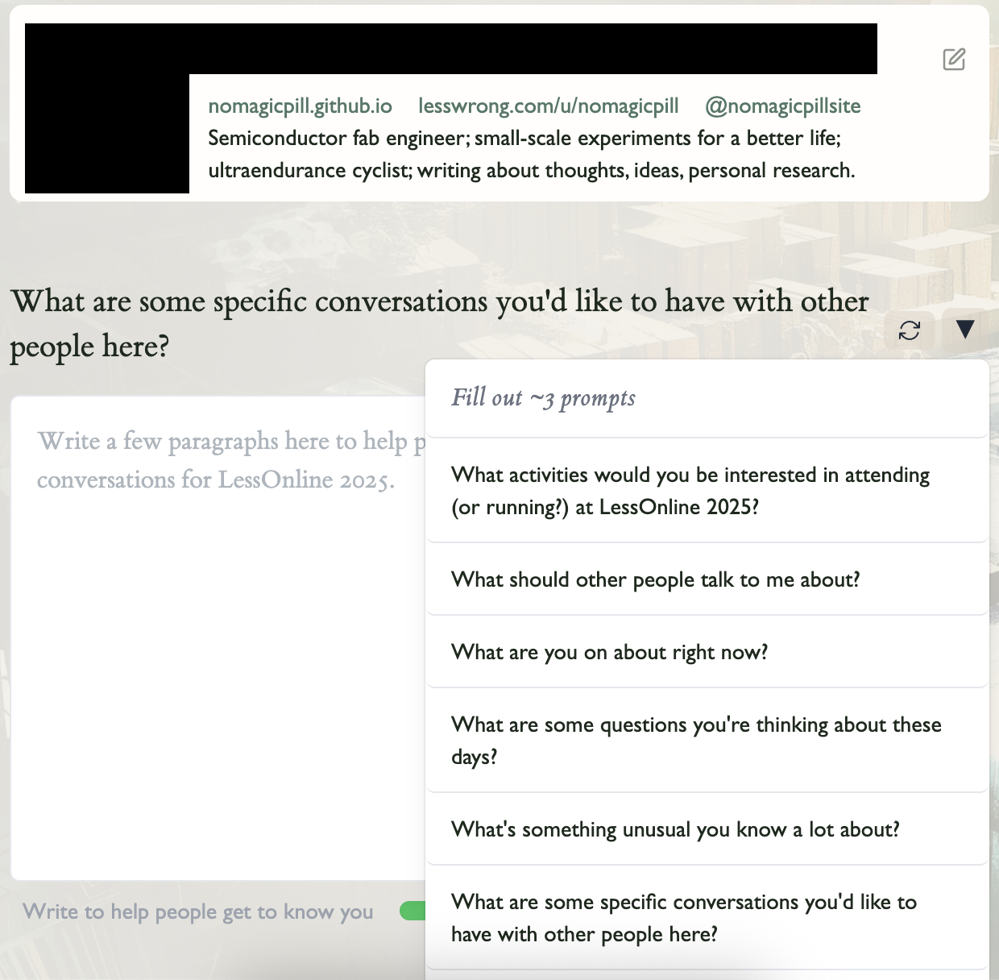
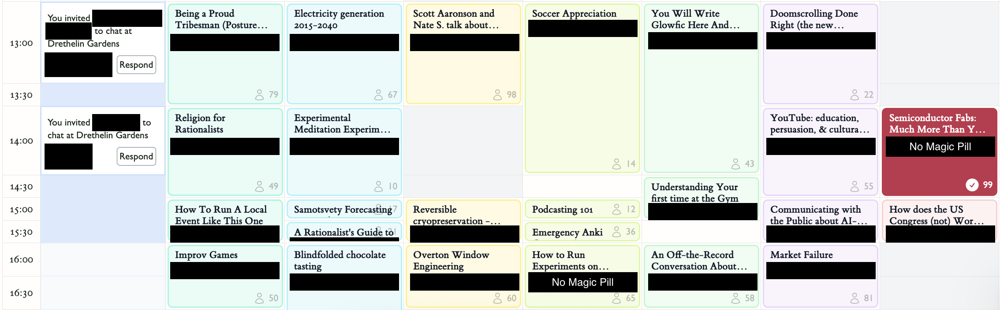

LessOnline trip report from 29 May - 01 June 2025.
LessOnline (LO) is a three-day festival (unconference) where you can do one of two things: go to sessions or talk to people. That's it. If you aren't a fan of listening to others talk or talking to others yourself then you probably shouldn't go.
If you are a fan of either of those two things and you're in the blogosphere/Rat-osphere/TPOT/etc (hereby generically referred to as The Scene), then I'm pretty confident you'll love it. There are a bunch of The-Scene-Famous people you've probably heard of (Scott Alexander, Patrick McKenzie, Scott Sumner, Aella, Gwern) as well as people who may not be as famous, but are still super interesting both online and off (Dynomight, Niplav, No Magi...just kidding). You can talk to them like normal people; oogle and ogle at them from afar; ask questions you're too afraid will get downvoted to shreds online; or completely ignore them because you "don't put people on pedestals".
Even after this tier (measured by famousness, which isn't perfectly correlated to traits people find valuable), the people continue to stay both awesome and diverse despite not having a Substack that pays their rent every month. Almost every person there has something valuable to say whether it's something they do for work or on the side. The organizers help facilitate finding these people in two ways:
You can then browse others' profiles or ask the LLM for suggestions.

For the sessions, attendees could just book a session (without knowing demand). Certain talks had much more interest than others thanks to the topic or speaker, while others were sparsely attended due to the topic or conflict with another session. Some examples of sessions that I thought were cool in no particular order:
What went wrong in the 2008 financial crisis? So what is the deal with Japan's monetary policy and did it break the Japanese economy? What are your fellow economists most wrong about? Ask these questions and many more in this Q&A with Scott Sumner.Sources say Janet Yellen actually lives in Berkeley, so who knows, there may be a surprise in store for next year...
Future pandemics are likely enough that everyone should have a well-fitting reusable high-filtration mask ("elastomeric respirator"). But not every mask fits every face. I'll have a large selection of elastomerics, along with fit testing equipment.
Have you ever been curious about whether it's possible to have smarter or healthier kids? There are actually commercially available services that allow you to do this by picking an embryo that has more favorable genetic predispositions. This session will be a short talk followed by a lot of Q&A.
I've brought a bunch of world-class beer and will walk you through different styles, tasting notes, and where to find beer you'll like. I'll focus on "beer that doesn't taste like beer" - if you enjoy cocktails, wine, etc. but haven't found beer that suits your palate, this event is for you!
We'll walk through: motivations for using Anki, both good & bad; default traps/failure modes people make when starting out; the app's user interface; building a deck; q&a, etc. By the end, you'll have: a rough sense of the user interface; a deck you enjoy reviewing & expect to get value from; a rough sense of how to get good at using Anki

The beauty of the sessions is that a) anyone can sign up to host one, and b) the people hosting are probably both very knowledgable and excited about the topic. I almost convinced a guy to host a session on firearms and their history a few hours before he had to catch his flight.
My approach towards the weekend was to just chat with people organically and see what I ran into. I regret this. Not because I had horrible convos (which I did), but because of the inefficiency. Even here, where people are extremely open and curious and you can easily prompt them with "what are your interests?", there exists a sort of conversational dance where both people are trying to find out what to talk about. And once you've started the dance, you can't immediately abort when you find out they want to talk about some esoteric topic you have zero, if not negative, interest in. So that takes 5-10 minutes of giving them an ear before you gracefully bow out and go elsewhere, wondering if it will be just as bad.
Or I could've been more direct and just said something like "hey, I'm glad you enjoy X, but this doesn't interest me and I don't want either of us to waste our time talking to a disinterested person, so how about we call it here?"
Or I could've avoided these people altogether, browsed the profiles, and sought out my people. Much less wasted time, much better convos, and a much better experience.
Having pre-canned openers ready to prompt others with is key if you don't know the best way to start a conversation with a stranger at LO. The profile prompts can also easily be used.
Only twice did I feel like anyone was playing overt status games using their name or reputation. While the usual suspects' talks and time were sought after (based on attendance and always seeing them talking to someone), most of them were just their usual selves chatting away with others on topics both found interesting. There was definitely some fanboying, but the receiver never initiated it, always the fan. It also helps that pretty much everyone there is incredibly kind. Nobody grossly advertised "ask me about my $100MM ARR" or "Head of X at [leading AI lab]". They just had their name on their badge and that was it. (Which, in some cases, may be even more of a flex than explicitly putting some fact about yourself..?)
I like(d) this very much. It never felt intimidating to go up and ask someone something potentially foolish because, well, I didn't really know who they were. Sure, I know of Eliezer and Scott Alexander, but there were plenty of people there with quite prestigious positions who I only found out about after talking to them for 30 minutes, almost like a blinded interview of sorts where we know little about each other besides the substance of the convo.
Twitter and Strava followers were gained and phone numbers exchanged, but I didn't actually make any lasting friendships. I saw a few friends from my 2022 Lighthaven visit. I know a handful of people who probably did make lasting friendships while there.
I saw a handful of people with something indicating they were looking for a new job. I think this is probably one of the best places to do this: the talent, diversity, and reach amongst the LO crowd is nuts.
I'm almost certainly going to LessOnline 2026. Please contact me if you're interesting in hanging out while there!